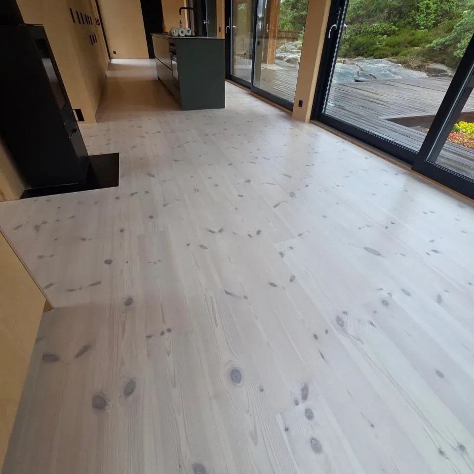
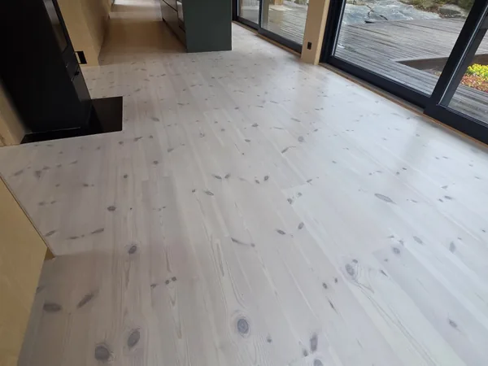
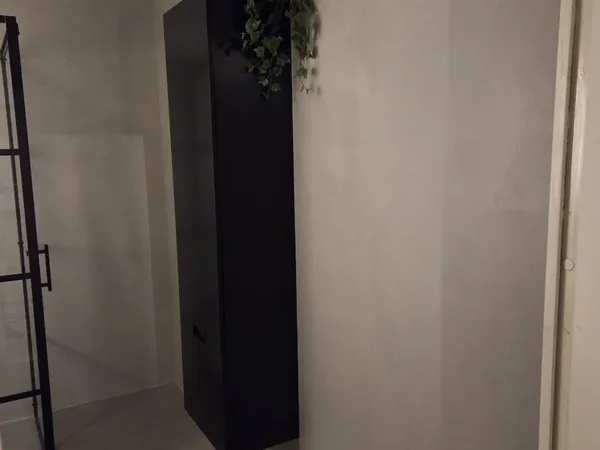
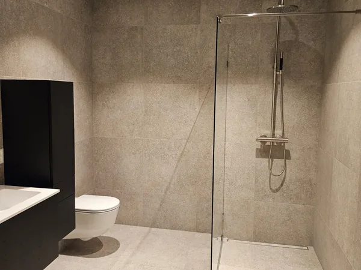
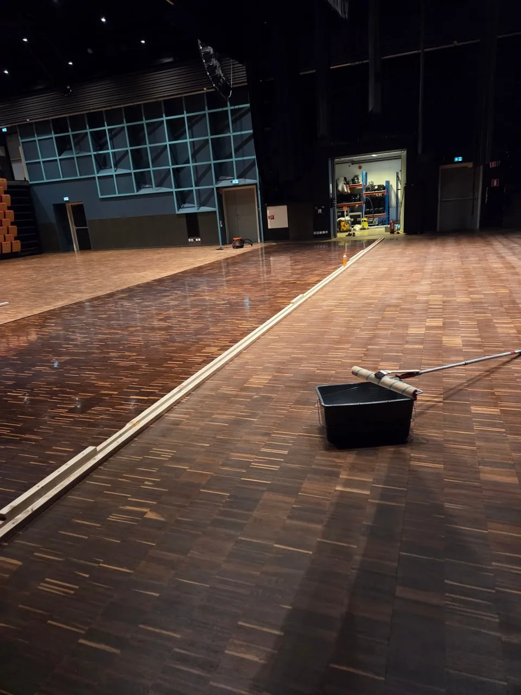
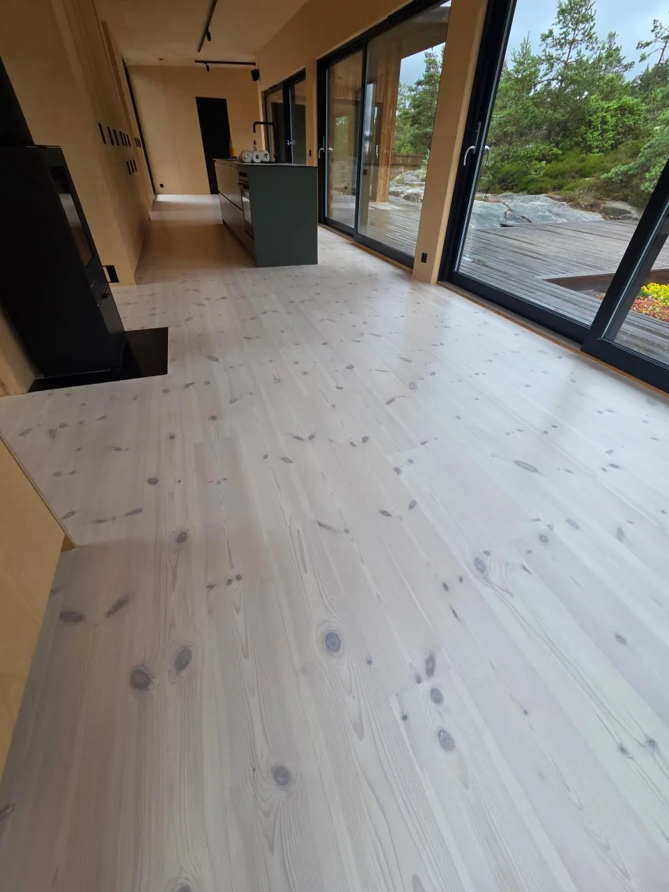
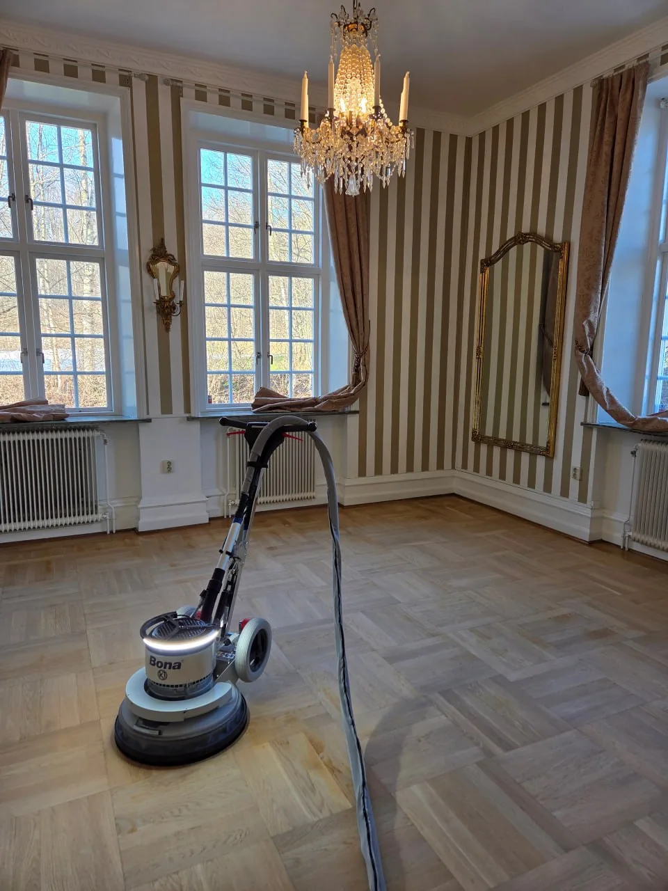

CK Måleri & Golv · Fredrikstad & Østfold · Kun en drøy time via E6
Gulvsliping, maler og flislegging i Fredrikstad
Gulvsliping · Malerarbeid · Mikrosement · Flislegging
Vi holder til i Uddevalla, like over grensen ved E6, og kommer til Fredrikstad og Hvaler for gratis befaring. Du får skriftlig fastpris på forhånd, og vi gjør hele jobben selv — med egne Bona-maskiner.
★★★★★ 5,0 av 5 i snittkarakter — 15 oppdrag via Servicefinder
Hva vi gjør
Alt innen gulv, vegger og overflater — uten mellomledd
Et gulv som slipes og et bad som flislegges henger sammen: nivåer, lister, tettesjikt og orden. Vi gjør alt selv, så du slipper å koordinere tre firmaer og to tidsplaner.

Gulvsliping
Parkett, fiskebensparkett og gamle tregulv slipes og behandles på nytt. Ofte er gulvet du allerede har bedre enn det du planla å kjøpe.
- Parkett og fiskebensparkett
- Gamle tregulv
- Lakk, olje eller pigment

Malerarbeid & tapet
Vegger, tak, vinduer, dører og fasader. Vi sparkler og grunner ordentlig — ellers synes slurvet i dårlig lys.
- Innvendig og fasade
- Tapetsering
- Sparkling og fuging

Mikrosement
Fugefrie overflater på bad, gulv, vegger og benkeplater. Et bad i ett stykke, uten fuger som misfarges.
- Bad og kjøkken
- Gulv og vegger
- Helt fugefritt

Flislegging
Fliser i gang, kjøkken og bad — med tettesjikt som er utført riktig, ikke bare pent på overflaten.
- Fliser og klinker
- Gang, kjøkken og bad
- Fuging og tettesjikt
Våre prosjekter
Bilder fra ekte prosjekter
Ingen stockfoto. Dette er overflater vi har gjort i Uddevalla med omegn.

Gammelt tregulv — halve flaten allerede slipt ned til rent tre.

Fiskebensparkett — én side nyslipt, den andre venter.

Stor flate, parkettgulvet tatt i etapper.

Lyst tregulv i et moderne kjøkken, ferdig.

Krystallkrone, speil og nyslipt parkett.
Vil du se hva vi kan gjøre med dine overflater? Be om et gratis prisforslag →
Hvorfor oss
Hvorfor velge et svensk team i Fredrikstad?
Vi er ikke størst. Vi er de som tar jobben, gjør den selv og svarer når du ringer.
- Svensk prisnivå og skriftlig fastpris
- Konkurransedyktige priser og en gunstig kronekurs — alltid med skriftlig fastpris etter befaring.
- Kort vei via E6
- Vi kjører rett opp E6 over Svinesund og er i Fredrikstad på rundt en time for gratis befaring.
- Over 15 års erfaring og egne Bona-maskiner
- Støysvak og tilnærmet støvfri sliping.
- Én kontaktperson hele veien
- Vi koordinerer gulv, maling, mikrosement og fliser selv.
- Ryddig og rengjort
- Vi støvsuger, vasker av og rydder alltid etter oss.
- Forsikret virksomhet
- Ansvarsforsikring og ryddige avtaler.
Lokalt i Østfold
Gulv og overflater i Fredrikstad og på Hvaler
Fredrikstad har en av Norges best bevarte festningsbyer, og i Gamlebyen og områdene rundt Cicignon står trehusene tett. Der er det sjelden rom for moderne gulv — det skal være plank, brede bord og overflater som tåler livet i et gammelt hus. Samtidig finner vi en helt annen type oppdrag på Kråkerøy, Gressvik, Begby og Rolvsøy: nyere eneboliger og rekkehus med parkett som er moden for sliping.
Vi jobber i hele Fredrikstad og på Hvaler — også Onsøy og øyene — med gulvsliping, malerarbeid, mikrosement og flislegging. Kysten betyr mange hytter og fritidsboliger, og der er det ofte et slitent tregulv eller et bad som skal tåle fukt. Det tar vi oss av.
Vi kjører opp fra Uddevalla via E6 og Svinesund med egne Bona-maskiner, og gjør jobben selv fra start til slutt. Noen bilder og cirka antall kvadratmeter er nok for et første anslag.
Ofte stilte spørsmål
Ofte stilte spørsmål fra kunder i Norge
Penger og risiko først. Det praktiske kommer etter.
Koster det noe å få dere på befaring i Fredrikstad?
Nei, befaring og pristilbud er helt gratis og uforpliktende.
Hvordan fungerer prising og fakturering når dere holder til i Sverige?
Du får en skriftlig fastpris før vi starter. Ingen skjulte tillegg for reise eller bompenger etter at prisen er avtalt.
Hva koster gulvsliping per kvadratmeter?
Det avhenger av tregulvets tilstand, hvor mye som må slipes ned og hvilken behandling du velger. Du får et anslag på telefon og en skriftlig fastpris etter befaring.
Kan mitt gamle tregulv eller parkettgulv reddes?
Nesten alltid. Så lenge treet ikke er gjennomslitt eller fuktskadet, går det å slipe fram en frisk overflate. Er det ikke verdt pengene, sier vi det.
Hvor lang tid tar det før dere kan starte i Fredrikstad?
Vi planlegger befaring raskt, som regel innen et par uker, og setter av sammenhengende dager til jobben så vi blir ferdige i én runde.
Kan svensker med bolig eller hytte i Norge bruke ROT-fradrag?
Ja, dersom du skatter i Sverige og eier boligen eller hytta i Norge, gjelder svensk ROT-fradrag innen EØS. Si fra ved befaring, så ser vi på det.
Kontakt
Fortell oss om oppdraget ditt
Send noen linjer om jobben, eller ring. Du får svar samme dag og forslag til tid for befaring i Fredrikstad.
Vil du heller ringe? Slå på tråden: +46 73 703 37 17